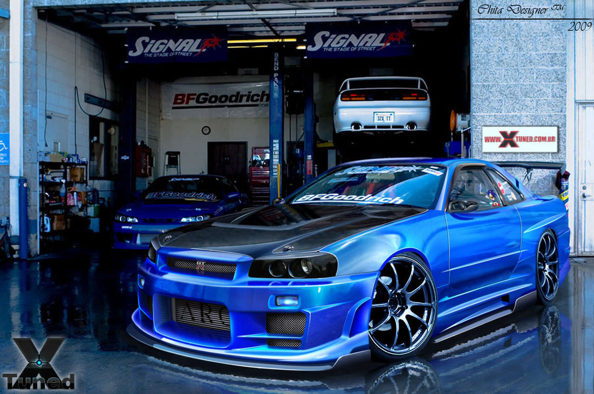

The nissan skyline is a sports car that starts at aprice of 89,500$. It is way more advance than the R33. Under the hood of the car it has twin ceramic intercooled boosters turbochargers which helps it to eliminate turbo-lag. This car has a 6-cylinder engine that reatains the 280PS at 6,800rpm of the R33. The R34 also ha a stiffer body and the aerodynamics of the car has been improved.The nissan skyline has also have a 4-wheel system which helps it be in both roads and racetrack. This system ha smore speed at roads because it has a serious of two sensors which optimises the tourge of the front and real axles.
